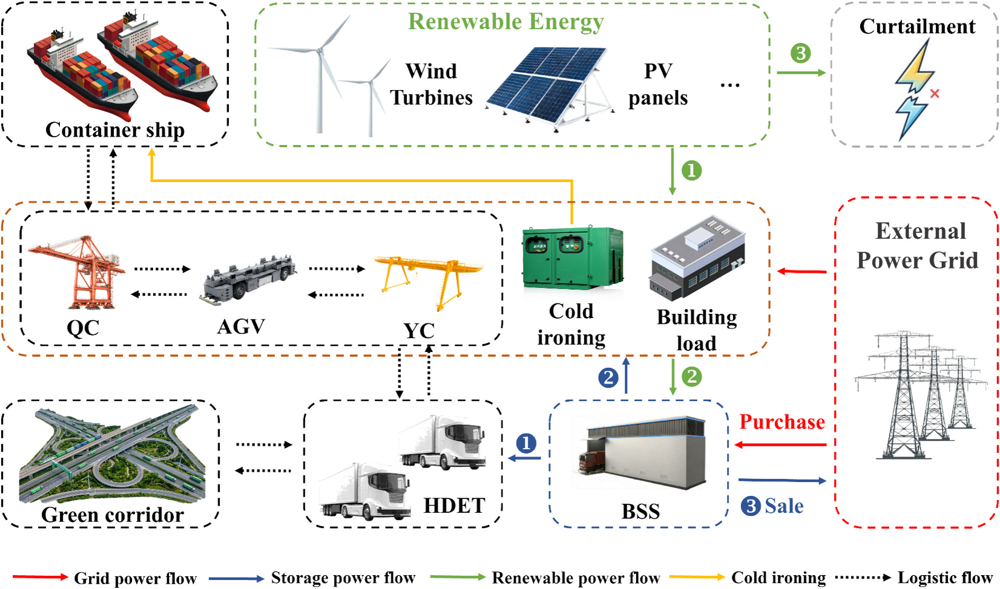
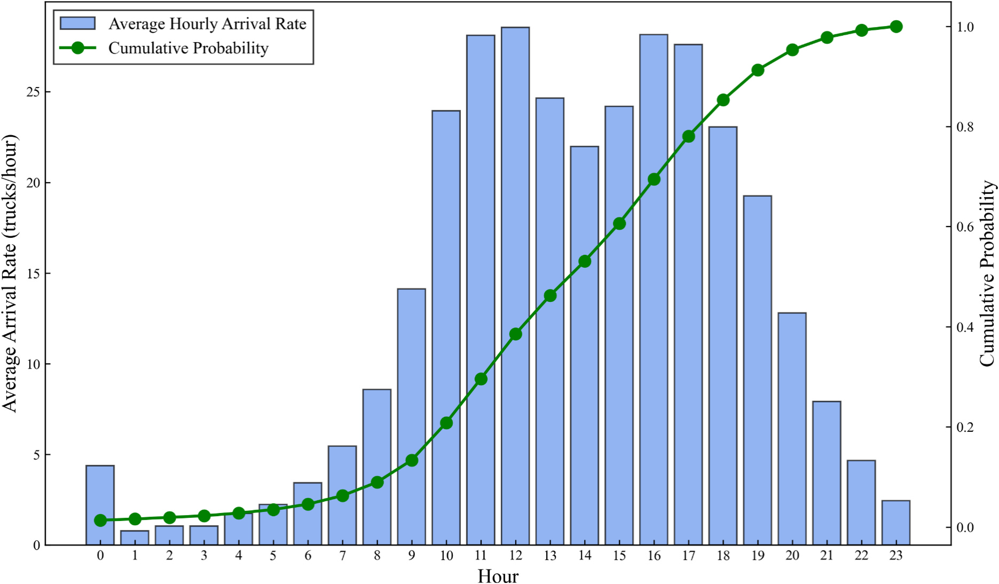
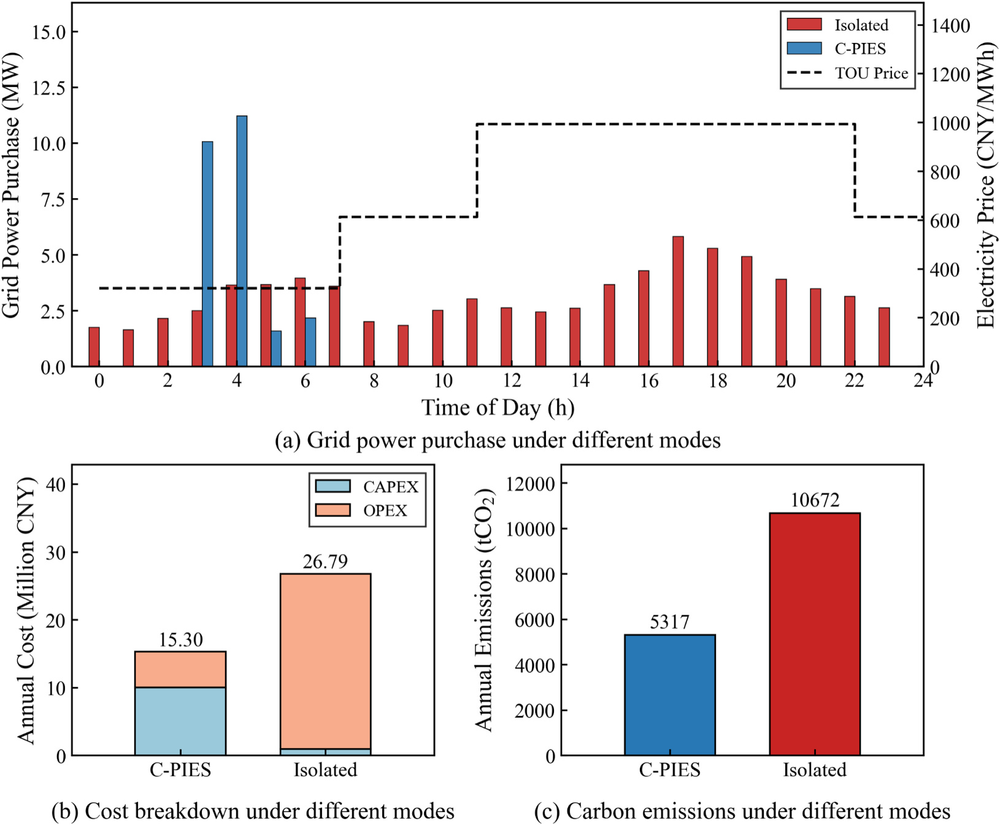
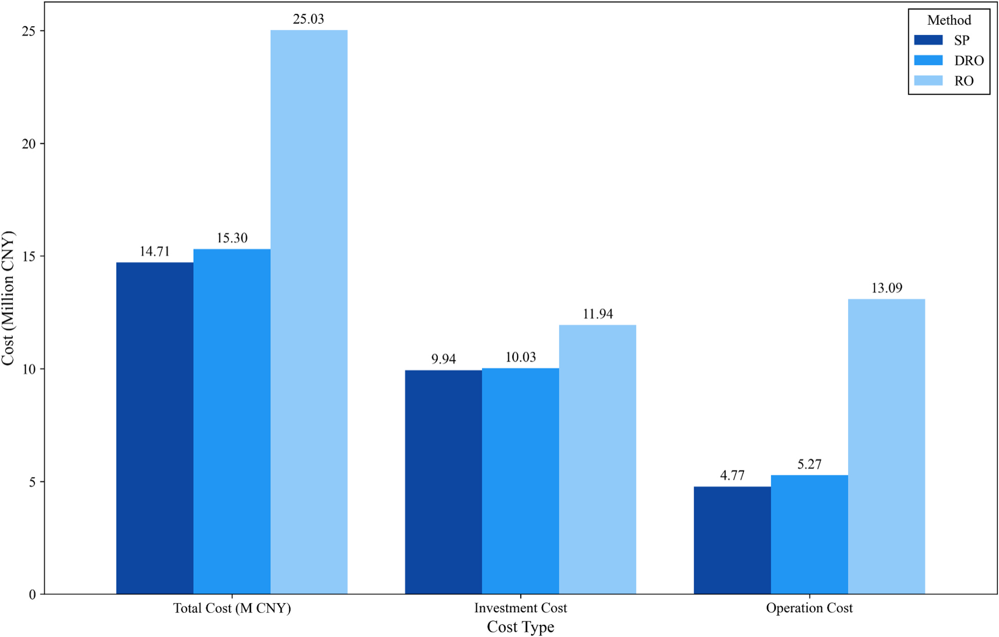

港口不只是终点：重卡电动化如何与走廊能源系统协同规划
Wang, R., Feng, X., Wang, S., Tao, K., Zhang, Y., Yuen, K. F., & Wu, M. (2026). Collaborative planning framework for heavy-duty truck electrification: Corridor-port integrated energy systems. Transportation Research Part D: Transport and Environment, 159, 105537. https://doi.org/10.1016/j.trd.2026.105537
作者团队包括河海大学海运物流与绿色发展研究所的 Ruihua Wang、Xuejun Feng、Suyang Wang、Kaixuan Tao、Yan Zhang，以及新加坡南洋理工大学土木与环境工程学院的 Kum Fai Yuen、Min Wu。Ruihua Wang 为第一作者；Xuejun Feng、Yan Zhang、Kum Fai Yuen 和 Min Wu 为通讯作者。研究获国家重点研发计划（2021YFB2600203）资助。
作者提出“走廊—港口综合能源系统”（C-PIES），把港口风光、港内设备与岸电、腹地电动重卡换电需求和外部电网纳入同一规划边界。
泉州港案例中，相比独立运行模式，年化总成本从 2679 万元降至 1530 万元，降幅 42.89%；年碳排放从 10,672 tCO₂ 降至 5,317 tCO₂，降幅 50.2%。这些是特定案例假设下的优化结果，并非可直接外推的固定收益率。
结论先行
- 港口能源规划需要把腹地重卡的时变补能需求纳入系统边界。
- 换电站既提供交通服务，也能用备用电池承担储能和削峰功能。
- 案例收益来自增加固定资产投资、显著减少长期运营和高峰购电成本。
- DRO 总成本比随机规划高 3.7%，但传统鲁棒优化因过度保守成本更高。
- 约 80% 电动化率处的碳强度变化是泉州案例结果，不是通用阈值。
研究与方法
论文要回答的是：沿港口—腹地货运走廊推进重卡电动化时，能否同步规划港口可再生能源、储能和交通负荷，使港口成为区域能源枢纽？作者建立两阶段分布鲁棒优化模型：第一阶段决定风机、光伏和换电站容量，第二阶段在风光出力与车辆到达不确定时安排购售电、弃电、充放电和换电服务。
模型使用 Wasserstein 距离构造概率分布模糊集，并以泉州—厦门走廊的高频 GPS 轨迹估计重卡每小时到港规律。研究是规划模型，不是已建成项目的运营评估。
走廊与港口为何需要同一能源边界？

独立模式下，港口只为自身负荷规划能源，走廊重卡单独从电网补能，可能同时出现港口弃风弃光和车辆在高价时段集中购电。C-PIES 先以风光满足港内负荷，再为换电站充电；供电不足时由储能和电网依次补足。
GPS 到港节奏如何变成能源需求？

作者用 GPS 轨迹识别到港车辆，以非齐次泊松过程描述时变到达强度，再生成不确定场景。相比日均车流，这一方法能同时识别交通峰值、光伏出力和电价时段是否匹配；但迁移到其他港口时必须重新估计本地到达分布。
42.89% 成本下降如何形成？

模型配置 6.00 MW 风电、5.32 MW 光伏和 64.86 MWh 换电站储能。协同模式年化投资成本由 101 万元增至 1003 万元，运营成本却从 2578 万元降至 527 万元。97.72% 的储能充电发生在谷价期，高峰期放电替代 43.77% 的负荷。
收益依赖峰谷电价差、储能成本、设备寿命和风光资源。模型未计入土地审批、换电标准兼容、多主体融资和车队采用速度等实施摩擦。
鲁棒性需要付出多少成本？

随机规划成本最低，但要求预设概率分布足够准确；传统鲁棒优化覆盖不确定区间内的极端组合，容易配置过多冗余。DRO 在本案例中以 3.7% 的成本溢价换取对分布偏差的保护，但论文没有通过多年样本外运行检验直接证明其真实运营表现。
电动化比例不是孤立目标
随着电动化率提高，柴油车直接排放下降，购电间接排放增加，但案例总排放仍低于未电动化基准。约 80% 电动化率时模型新增风机，碳强度出现局部下降；敏感性分析显示，改变光伏用地或风电投资会移动这一拐点。因此电动化目标必须与低碳电源、储能和电网能力共同优化。
启示
港口管理者需要把腹地重卡需求纳入能源规划；换电运营商应同时评估交通服务和储能价值；政策制定者则需协调车队电动化、港口风光、配电扩容、补能标准与数据共享。系统协同也带来收益分配问题：谁投资电池、谁获得峰谷套利收益、谁承担退化和应急容量成本，仍需进一步设计合同和治理机制。
局限性
- 泉州单案例结果不能直接外推到其他港口。
- 模型只规划电力，未联合考虑氢、甲醇和氨等能源载体。
- 港内柔性负荷和船舶岸电连接过程经过简化。
- GPS 到港规律可能随季节、拥堵和车队结构变化，缺少跨年度样本外验证。
- 统一成本目标未解决港口、车队、换电商、电网和投资者之间的收益分配。